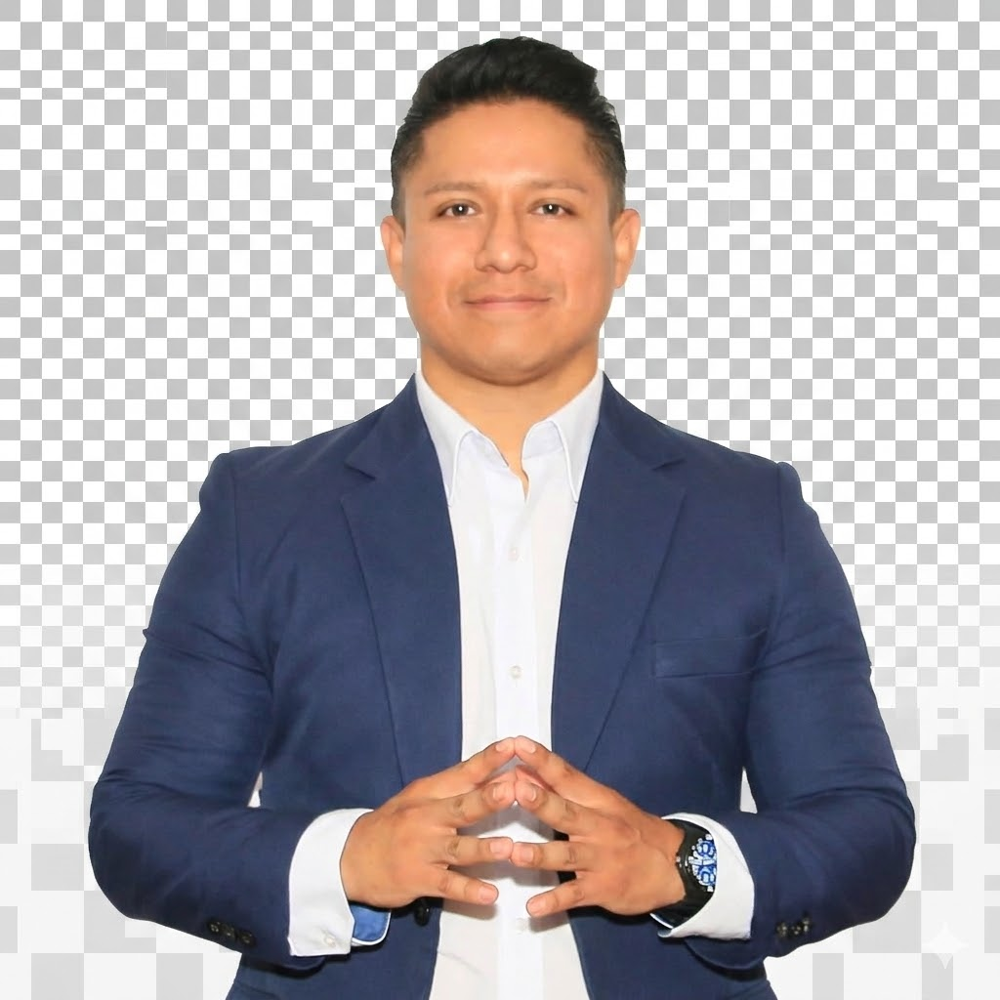

"No solo darles el pescado, sino enseñarles a pescar."
El Dr. José Luis Hurtado Apaico — abogado, doctor y criminólogo — propone una gestión basada en la Doctrina Social Cristiana: seguridad real, empoderamiento comunitario y gestión ética.

Alcaldía del Distrito de Ate · Partido Popular Cristiano · 2027–2030
Candidato a la Alcaldía del Distrito de Ate
El Dr. José Luis Hurtado Apaico es un profesional con sólida formación académica y genuina vocación de servicio público. Su perfil único combina el rigor del derecho con la mirada científica de la criminología, lo que le permite abordar los problemas de seguridad ciudadana no solo con voluntad política sino con conocimiento técnico real.
La criminología es la ciencia que estudia el crimen, sus causas, sus patrones y su prevención. Un alcalde con esta formación no solo instala cámaras: diseña políticas de prevención basadas en evidencia, identifica las causas raíz de la inseguridad y propone soluciones sostenibles que van más allá del patrullaje. Ate merece un alcalde que entiende el problema desde adentro.
Su visión integra la Doctrina Social Cristiana con el conocimiento técnico: cree, con Pío XI, que el Estado debe apoyar sin sustituir; con Juan Pablo II, que el trabajo dignifica; y con Tomás de Aquino, que el bien común es el fin de toda autoridad legítima.
El PPC funda su propuesta en los principios que grandes pensadores de la Iglesia desarrollaron para orientar la vida política en justicia y dignidad.
Es el conjunto de principios que la Iglesia Católica ofrece para organizar la vida social con justicia, libertad y dignidad. No es una ideología partidaria, sino una fuente de valores que ilumina a quienes gobiernan. El PPC la hace suya como fundamento de toda su propuesta para Ate.
Cada ser humano tiene valor inalienable. Todo programa político debe respetarla y promoverla.
Condiciones que permiten a todos alcanzar su pleno desarrollo. El gobierno sirve al bien de todos.
El Estado no debe hacer lo que la comunidad puede hacer por sí misma.
Todos somos responsables de todos. Los más fuertes tienen obligación con los más débiles.
Los bienes de la tierra están destinados a todos. La propiedad tiene una función social.
"El hombre es por naturaleza un animal político, y vivir en sociedad no es para él una opción sino una necesidad."— Santo Tomás de Aquino
Fundado en 1966 con una identidad clara: democracia cristiana, humanismo político y compromiso con los más necesitados.
El Partido Popular Cristiano fue fundado el 18 de diciembre de 1966 por Luis Bedoya Reyes. Nació como alternativa entre el marxismo y el liberalismo extremo, apostando por un humanismo político que pone a la persona en el centro.
"El PPC se compromete a conducir una política honesta, transformadora, concreta, realista y eficaz, auténticamente democrática."
"Aspiramos a representar a los peruanos que creen en la dignidad humana y la libertad como valores fundamentales para el bien común."
El PPC rechaza tanto el marxismo colectivista como el capitalismo salvaje. Propone una economía social de mercado: libre empresa con responsabilidad social.
"Mediante el trabajo el hombre no solo transforma la naturaleza sino que se realiza a sí mismo." — Juan Pablo II
Un partido que exige democracia al Estado debe practicarla primero en su propia casa. Sus estatutos garantizan elecciones internas, transparencia y rendición de cuentas.
"La familia es la célula primera y vital de la sociedad." — Catecismo de la Iglesia Católica
Un alcalde criminólogo y abogado no improvisa en seguridad. Diseña políticas basadas en evidencia.
Implementaremos un sistema integral de seguridad que combine tecnología, presencia policial, participación vecinal y justicia efectiva. Siguiendo el principio tomista de que "el bien común requiere paz y orden para florecer", la seguridad no es un lujo: es un derecho fundamental.
"Injusto es quitar a los individuos lo que ellos pueden realizar con sus propias fuerzas para confiárselo a la comunidad."— Papa Pío XI · Quadragesimo Anno (1931) · Principio de Subsidiariedad
Inspirados en el principio de subsidiariedad de Pío XI: no queremos comunidades dependientes, sino vecinos empoderados y protagonistas de su propio desarrollo.
Los proyectos autogestionarios del Dr. Hurtado Apaico se inspiran en la subsidiariedad (Pío XI) y en la centralidad del trabajo (Juan Pablo II): cada vecino de Ate debe poder desarrollarse con sus propias manos, con el apoyo —nunca la sustitución— del Estado.
Familias cultivan sus propios alimentos en terrenos municipales. Capacitación en agricultura urbana y compostaje.
Costura, carpintería, electricidad, panadería. Enseñamos el oficio y acompañamos hasta formalizar el negocio.
Computadoras e internet gratuito en cada zona. Cursos de computación, diseño y redes sociales para negocios.
Mejoramiento de viviendas ejecutado capacitando y contratando a los propios vecinos del barrio.
Formalización de recicladores de Ate con equipamiento y articulación con empresas compradoras.
Vecinos capacitados como promotores: primeros auxilios, nutrición y prevención. La salud empieza en el barrio.
Espacios ordenados donde los emprendedores de Ate venden sus productos con apoyo en formalización.
Formamos dirigentes con herramientas reales: proyectos, fiscalización y presupuesto participativo.
Somos la organización del PPC en el distrito de Ate, agrupados en la Macro Zonal 4. Creemos que el desarrollo real nace cuando una comunidad se organiza, se capacita y toma las riendas de su propio destino.
Respaldamos la candidatura del Dr. José Luis Hurtado Apaico para la Alcaldía de Ate 2027–2030, con un programa anclado en la Doctrina Social Cristiana: seguridad real y autogestión comunitaria.
Fundado en 1966, el PPC llega a Ate con fuerza renovada: "PPC Renace".
Un Ate seguro y autosuficiente, donde cada familia tenga las herramientas para generar su propio desarrollo con dignidad.
Ganar la Alcaldía de Ate 2026 con un programa real: seguridad ciudadana efectiva y proyectos que empoderen a la comunidad.
Ética, honestidad, subsidiariedad y solidaridad. El ciudadano es protagonista de su propio desarrollo.
El equipo que dirige nuestra organización en Ate
¿Quieres apoyar la candidatura o participar en un proyecto? Escríbenos.
Distrito de Ate · Lima, Perú
Sede Nacional: Av. Alfonso Ugarte 1484, Breña
Lunes – Viernes · 9:00 a.m. – 6:00 p.m.